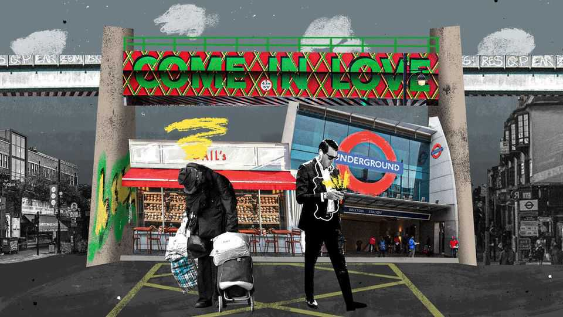

What happens when a place degenerates and gentrifies all at once?
It says a lot about the state of the British state

Oct 29th 2026
When Gail’s, a chain of artisan bakeries, opened a store in Brixton, an always-lively part of London, on October 16th, it did not receive a warm welcome. Posters appeared of a sourdough loaf altered to look like a bomb. A petition against the store attracted 1,326 signatures. Naturally, once opened it was rammed with Brixtonians buying ham-and-cheese croissants for £5.40 ($7.20). Its windows provided a panorama of travellers streaming down the steps into Brixton Underground Station. Just before 4pm on Saturday October 24th it offered a view of a man pinning someone down and stabbing at him repeatedly.
Welcome to Brixton, where degeneration and gentrification are never far apart. To gauge the state of the British state, ignore the budget, which took place in Westminster on October 28th, and scoot down to Brixton. The area has always been the sharpest example of social change. It was a symbol of post-war immigration before it became a byword for inner-city decline and racial strife. It has since been a tale of rebirth. Gentrification ripped through the area. Handsome Victorian terraces went from five figures to six figures to seven figures. Now it is, again, a picture of something rotten. Call it degen-trification, where an area is both on the up and falling apart, all at once.
Bad behaviour increased after lockdown, says Ayesha Hazarika, a broadcaster and an organiser of Action on Anti-Social Behaviour, a local residents’ group. An area that was always vibrant if edgy instead became scary. Residents complain of drug addicts defecating and masturbating in public. Robberies are up by over 40% year-on-year in 2026 so far; sexual offences by a similar rate. Robert Jenrick, an MP for the populist-right Reform UK, filmed himself marching around Electric Avenue hunting shoplifters, safe in the knowledge he would find some. A few metres from Gail’s, past the site of the stabbing, someone has daubed “Destroy Brixton Gentrification”. A baffled resident might channel Mahatma Gandhi’s reputed thoughts on Western civilisation: “Gentrification? I think it would be a good idea.”
Brixton both confirms and denies the online caricatures of London as a hellhole, depending on where one looks. Is it a no-go area? Far from it. Every evening, young Londoners erupt out of Brixton Underground Station, flicking a Revolut or American Express at the ticket barrier before scurrying into Brixton Market, a once-rundown 1920s affair but now a yuppy playground. Chishuru, a Michelin-starred Nigerian restaurant, started here; as did middlebrow fare from Franco Manca to Honest Burgers, which became successful chains. Jay Rayner, Britain’s finest food critic, lived down the road, and slapped his approval on anything good.
As it is for London’s yuppies, so it is for the city’s crackheads, who barge through the barriers at Brixton station to sample the local delights. Brixton is blessed with, by all accounts, Michelin-grade crack cocaine, and so people travel from far and wide as they would for any new small-plates joint. At night a curiously well-manned hot-dog stand appears outside the station. It serves glass-eyed Zoomers, staggering out of the Tube. It also serves skeletal figures with a determined look who have cajoled generous passers-by into paying for a hot-dog with a flick of an iPhone. The addict is then taken round a corner and handed a small package. Brixton could well be the only place in Britain where it is possible to pay for crack with contactless.
Brixton is the story of a state that has lost the capacity to care. Every part of it has bigger things to worry about. What is a little fare-dodging when Transport for London has a backlog of £4bn in repairs on its Underground network? However well-paid Tube station staff may be, expecting them to deal with knife-wielding assailants is a bit much. Anyway, aren’t the British Transport Police supposed to do that? Though London’s main stations are well-staffed by men with guns, far fewer officers are available for workaday antisocial behaviour on the rest of the Tube.
In any case, Brixton Underground Station is a short walk from a police station. Arresting a drug addict or a small-time street dealer is easy. But where would they go? England’s crown courts have a year-long wait; its prisons are full. At its last inspection HMP Brixton was England’s most crowded category-C prison, for offenders on the path to redemption. Prisoners are doubled up in single-occupancy cells. And about 40% of prisoners said it was easy to score drugs within its walls. (That said, HMP Brixton does have an acclaimed restaurant, The Clink, staffed by inmates serving pan-fried lemon sole in a lemon-butter sauce for £26.)
Can’t the council step in? It already does. It spends the best part of £250,000 a night—about £100m a year—on temporary accommodation for the homeless. This is not largesse born of being a borough in one of the world’s richest cities: with a projected cumulative deficit of £93m by 2030, Lambeth is almost broke, due to obligations from Westminster being dumped on councils without funding to match. Expecting it to treat hundreds of crack and opiate addicts who live in Lambeth on top is unfair. The result is an inordinately expensive system that fails everyone from taxpayers to the people sleeping rough at Brixton station.
When an area tears in two directions, it becomes a discourse monster proving everyone’s priors. For reactionaries it is a harbinger of what Britain will become without hanging ’em, flogging ’em or deporting ’em. For progressives it is austerity made manifest, a land of inequality incarnate where a banker will leave a £1.8m home and step over human shit on his way to work. Sometimes England’s extremes are all in one place and make the solutions offered in Westminster seem inadequate. Just take a trip to Gail’s in Brixton and look out of the window to see. ■